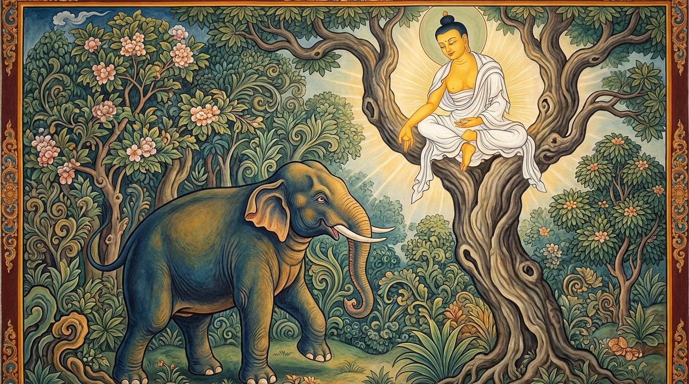

5. දුබ්බලකට්ඨ ජාතක කථාව (105)
“බහුම්පෙතං වනෙ කට්ඨ” යනාදී වශයෙන් එන මේ ජාතක දේශනාව බුදුරජාණන් වහන්සේ ජේතවනාරාමයේ වැඩවාසය කරන සමයේ, එක්තරා බියපත් වූ භික්ෂුවක් අරභයා දේශනා කරන ලදී. ඔහු සැවැත් නුවර වැසි කුල පුත්රයෙකි. බුදුරජාණන් වහන්සේගෙන් දහම් අසා පැවිදි වූ නමුත්, ඔහු මරණයට අතිශයින් බිය වූවෙක් විය. රෑ දවල් දෙකෙහි වසන තැන්වලදී සුළං හඬක් ඇසුණත්, පවන් ගසන හඬක් ඇසුණත්, වියළි දර කැබැල්ලක් වැටුණත්, කුරුල්ලන්ගේ හෝ සිව්පාවුන්ගේ හඬක් ඇසුණත් මරණ බියෙන් ත්රස්ත වී මහ හඬ දෙමින් පලා යයි. “මා කවදා හෝ මිය යා යුතු යැයි” යන සිහිය මාත්රයක්වත් ඔහු තුළ නොතිබුණි. ඉදින් ඔහු “මම මිය යන්නෙමි” යැයි දැන සිටියේ නම්, මරණයට බිය නොවන්නේය. මරණානුස්සති කමටහන ප්රගුණ නොකළ බැවින්ම හෙතෙම බිය වෙයි. ඒ භික්ෂුවගේ මේ මරණයට බිය වීමේ ස්වභාවය භික්ෂු සංඝයා අතර ප්රකට විය.
දිනක් භික්ෂූන් වහන්සේලා දම් සභාවෙහි රැස්ව මේ කථාව මතු කළහ. “ඇවැත්නි, අසවල් භික්ෂුව මරණයට බිය වූවෙකි. භික්ෂුවක් විසින් ‘අනිවාර්යයෙන්ම මා මිය යා යුතුය’ යැයි නිතර මරණානුස්සති භාවනාව වැඩිය යුතුය” යනුවෙනි. ශාස්තෘන් වහන්සේ පැමිණ, “මහණෙනි, කවර නම් කථාවකින් යුතුව මේ වේලාවේ රැස්ව සිටියහුදැ”යි විමසා, එම කාරණය දැනගත් පසු ඒ භික්ෂුව කැඳවා, “සැබෑවක්ද? ඔබ මරණ බියෙන් තැතිගෙන සිටින්නෙහිදැ”යි විමසූහ. “එසේය, ස්වාමීනි” යැයි පැවසූ විට, “මහණෙනි, මේ භික්ෂුව පිළිබඳව අමනාප නොවන්න. මොහු මරණ බිය ඇත්තෙක් වන්නේ දැන් පමණක් නොවේ, පෙර ආත්මයේදීත් මරණයට බිය වූයේමය” යැයි වදාරා අතීත කථාව ගෙනහැර දැක්වූහ.
අතීතයේ බරණැස් නුවර බ්රහ්මදත්ත රජු රාජ්යය කරන කල්හි බෝසතාණන් වහන්සේ හිමාලය වනයෙහි රුක් දෙවියෙක් වී උපන්හ. එකල බරණැස් රජතුමා තම මඟුල් ඇතා යුද්ධයේදී නොසැලී සිටීම (ආනෙඤ්ජකාරණය) පුහුණු කරවීම සඳහා ඇත් ගුරුවරුන්ට භාර දුන්නේය. ඔවුහු ඒ ඇතා කණුවක (ආලනයක) බැඳ, තෝමර ආයුධ අතින් ගත් මිනිසුන් පිරිවරාගෙන, යුද්ධයට ගිය විට බිය වී පලා නොයනු පිණිස හික්මවීම සිදු කරති. ඒ හික්මවීම කරද්දී ඇති වන අධික වේදනාව ඉවසා ගත නොහැකි වූ ඇතා, බැඳි කණුව බිඳ දමා, මිනිසුන් පලවා හැර හිමාල වනයටම පැන ගියේය. මිනිසුන්ට ඇතා අල්ලා ගැනීමට නොහැකි වී ආපසු හැරී ගියහ. ඌ එහිදී මරණ බියෙන් පෙළෙන්නෙක් විය. සුළං හඬක් ඇසුණත් ගැහෙමින්, මරණ බියෙන් ත්රස්ත වී, සොඬය වනමින් වේගයෙන් පලා යයි. වනයෙහි සිටියද ඌට දැනෙන්නේ කණුවෙහි බැඳ නොසැලී සිටීමේ පුහුණුව කරන්නාක් මෙනි. කයට හෝ සිතට කිසිදු සැනසිල්ලක් නොලැබ වෙවුලමින් ඒ මේ අත සැරිසරයි.
එය දුටු රුක් දෙවියා ගසේ කඳ අත්තක සිට මේ ගාථාව ප්රකාශ කළේය:

“වනයෙහි දිරා ගිය යම් දර කැබැල්ලක් සුළඟ විසින් බිඳ දමනු ලබයිද, ඇතුනි, ඉදින් ඔබ ඊටත් බිය වන්නේ නම්, ඒකාන්තයෙන්ම ඔබ කෘෂ වූවෙක් වන්නෙහිය.”
එහි කෙටි අර්ථය මෙසේය: පෙරදිග ආදී දිශාවලින් හමන සුළඟින් බිඳී යන යම් ඒ දුබල දර කැබලි වෙත්ද, ඒවා මේ වනයෙහි ඉතා සුලබය; තැන තැන දක්නට ලැබේ. ඉදින් ඔබ ඊට බිය වන්නේ නම්, එසේ බියෙන් සිටීම නිසා මස් ලේ ක්ෂය වී ඒකාන්තයෙන්ම කෘෂ වූවෙක් වන්නෙහිය. නමුත් මේ වනයෙහි ඔබට එබඳු බියක් නැත. එබැවින් මෙතැන් පටන් බිය නොවන්න.
මෙසේ ඒ රුක් දෙවියා ඔහුට අවවාද දුන්නේය. ඇතා ද එතැන් පටන් නිර්භය විය.
බුදුරජාණන් වහන්සේ මේ ජාතක ධර්ම දේශනාව ගෙනහැර දක්වා චතුරාර්ය සත්යය ප්රකාශ කළ සේක. සත්ය දේශනාව අවසානයේ ඒ භික්ෂුව සෝවාන් ඵලයෙහි පිහිටියේය. “එකල ඒ ඇතා වූයේ මේ භික්ෂුවය. රුක් දෙවියා වූයේ මම ම වෙමි”යි ජාතකය ගළපා වදාළ සේක.
පස්වන වූ දුබ්බලකට්ඨ ජාතක වර්ණනාව නිමාවිය.